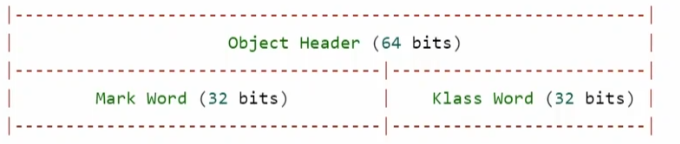
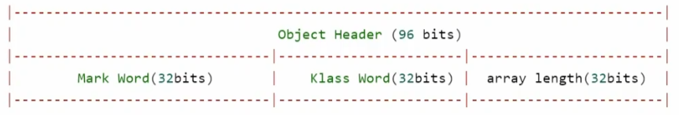
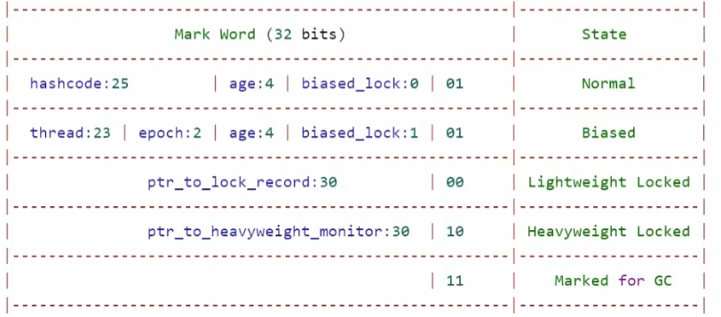
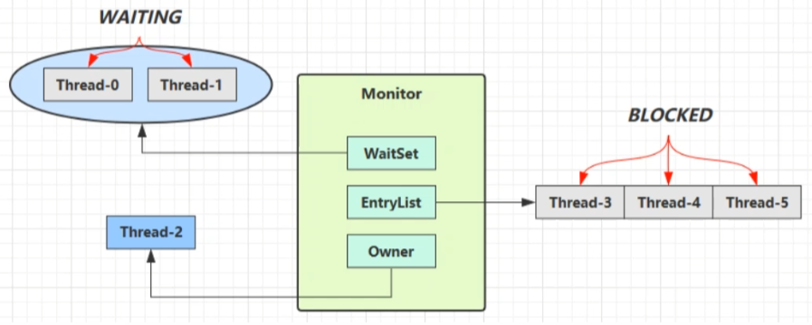
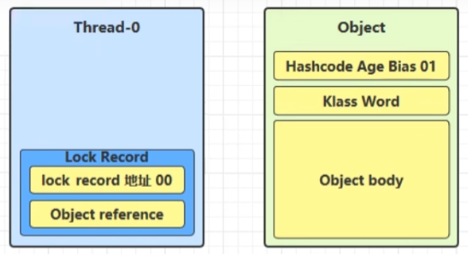
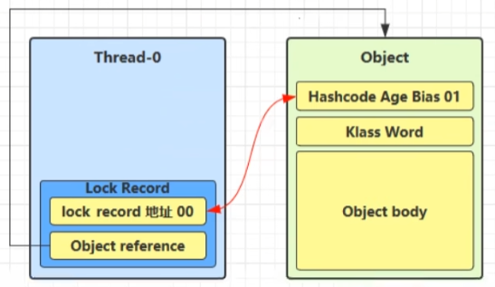
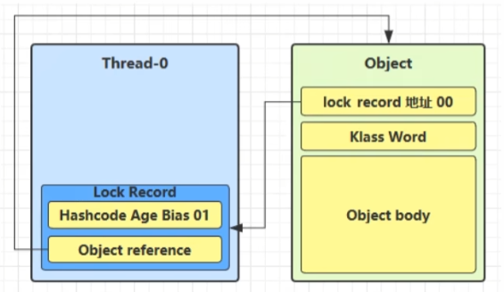
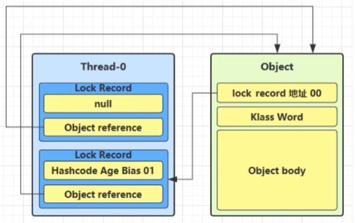
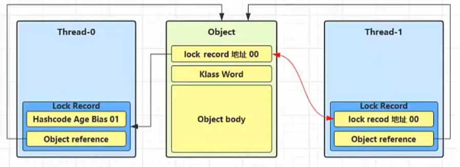
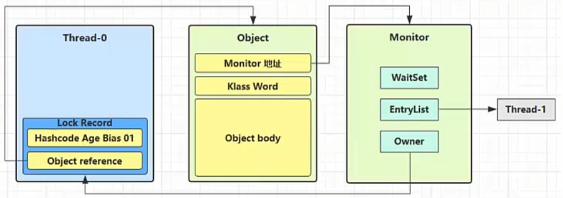

JUC-synchronized优化原理
3. 管理共享变量以及对共享变量的操作过程
3.4 Java对象头
以32位虚拟机为例
普通对象：

数组对象：

其中Mark Word的结构：

3.5 Monitor（锁）
Monitor被翻译为监视器或管程。
每一个Java对象都可以关联一个Monitor对象，使用synchronized给对象上重量级锁后，该对象的对象头中的Mark Word就会被设置为指向Monitor对象的指针。
Monitor结构如下：

- 一开始，Monitor中的Owner为null。
- 当Thread-2执行synchronized(obj)，即临界区的代码后，Owner被置为Thread-2，Monitor中只能有一个Owner。
- 在Thread-2上锁的过程中，如果T-3 / T-4 / T-5也执行到临界区的代码，那么它们会进入EntryList（一个链表）中，并进入BLOCKED状态。
- Thread-2执行完同步代码块的内容，释放锁，唤醒EntryList中阻塞的线程，让它们竞争锁。这个竞争不一定是先到先得，也许后进来EntryList的线程能得到锁。
- WaitSet中的Thread-0 / Thread-1是之前获得过锁，但条件不满足进入WAITING状态的线程。
注意：
- 必须是进入同一个synchronized对象的Monitor才有上述效果。
- 不加synchronized的对象不会关联Monitor，不遵从以上规则。
3.6 synchronized优化原理
3.6.1 轻量级锁
轻量级锁的使用场景：如果一个对象虽然有多线程访问，但是多线程访问的时间是错开的（也就是没有竞争），那么可以使用轻量级锁来优化。
当一个线程执行到临界区的代码时会发生什么事呢？
- 在线程的栈帧中创建一个锁记录对象Lock Record，每个线程的栈帧都会包含一个锁记录的结构，内部可以存储锁定对象的Mark Word。

- 让Lock Record中的Object reference指向锁对象，并尝试用CAS替换Object的Mark Word，将Mark Word的值存入Lock Record。

3.1 如果CAS替换成功，对象头中存储了Lock Record地址和状态00（00表示是轻量锁），表示由该线程给对象加 锁，如图。

3.2 如果CAS替换失败，分为两种情况：
- 如果发现Object对象头中状态码是00，且地址不是自己线程中的栈帧，说明其他线程已经持有了该Object的轻量级锁，表明有竞争，进入锁膨胀过程。
- 如果根据Object对象头中的地址发现是自己线程中别的栈帧拥有了这个锁，这是一种synchronized锁重入，那么再添加一条Lock Record作为重入的计数。下面的代码就会导致锁重入：
1 | static final Object obj = new Object(); |
此时对象状态如图。

- 退出synchronized代码块（解锁）时，如果有取值为null的Lock Record，说明发生了锁重入，此时把这一条Lock Record清除，表示重入计数减一。
- 解锁时，Lock Record的值不为null，这时使用CAS将Mark Word的值恢复给Object对象头，分为两种情况：
- 成功，则解锁成功。
- 失败，说明轻量级锁进行了锁膨胀或已经升级为重量级锁，进入重量级锁解锁流程。
3.6.2 锁膨胀
- 如果在尝试加轻量级锁的过程中，CAS操作失败，且是因为已经有其他线程为此对象加上了轻量级锁，这时会进行锁膨胀，将轻量级锁变为重量级锁。

- 此时Thread-1为Object对象申请Monitor锁，让Object指向重量级锁地址，状态码改为10，自己进入Monitor的EntryList，进入BLOCKED状态。

- Thread-0退出同步代码块解锁时，尝试CAS将Mark Word值恢复给对象头，失败。进入重量级锁解锁流程，即按照Monitor地址找到Monitor对象，设置Owner为null，唤醒EntryList中的BLOCKED线程。
3.6.3 自旋优化
自旋是指某线程需要获取锁，但该锁已经被其他线程占用时，该线程不会被挂起（不会进入阻塞状态），而是在不断的消耗CPU的时间，不停的试图获取锁。虽然CPU的时间被消耗了，但是比线程上下文切换时间要少。这个时候使用自旋是划算的。
自旋会占用CPU时间，所以单核CPU自旋就是浪费，多核CPU自旋才能发挥优势。
3.6.4 偏向锁
轻量锁在没有竞争时（也就是没有别的线程时），每次锁重入都会生成一条锁记录Lock Record，都要进行一次CAS的检查，可以使用偏向锁进行优化。
偏向锁：只有第一次使用CAS将线程ID设置到对象的对象头Mark Word中，之后锁重入只需要检查这个线程ID是否是自己，是就说明没有竞争，不用重新CAS。以后只要不发生竞争，这个对象就归该线程所有。
3.6.4.1 偏向锁状态
一个对象被创建时：
- 如果开启了偏向锁（默认开启），那么对象创建后，Mark Word值为0x05=00000101，即后3位为101（见3.4 Java对象头中Mark Word结构）。
- 偏向锁默认是延迟的，不会再程序启动时立即生效。
因为偏向锁的使用场景是冲突很少，一个线程来回操作的情况。所以如果遇到多线程经常需要竞争访问对象的场景时，可以禁用偏向锁：在VM options里添加参数-XX:-UseBiasedLocking
3.6.4.2 撤销偏向锁
- 调用对象hashcode()
对一个启用偏向锁的对象来说，调用它的hashcode()方法会禁用这个对象的偏向锁。因为对一个64位处在Biased状态的对象来说，它的前54位是用来存储线程ID的，调用hashcode方法后，状态码变为001，原本存储的线程ID和epoch都被清除，替换成哈希码。
- 其他线程使用对象
当有其他线程使用偏向锁对象时，会将偏向锁升级为轻量锁。
- 调用wait / notify
因为这种机制只有重量级锁有，调用后就会被升级为重量级锁。
3.6.4.3 批量重偏向
如果对象虽然被多个线程访问，但是没有竞争，那么偏向了线程T1的对象仍有可能重新偏向T2，重偏向会重置对象的Thread ID。
当撤销偏向锁的次数超过阈值20次后（>=20），JVM会觉得是不是偏向错了，于是在给这些对象加锁时，重新偏向至加锁线程。没超过阈值前，就会因为竞争把偏向锁升级成轻量锁。
3.6.4.4 批量撤销
当撤销偏向锁次数超过阈值40次后，JVM会觉得自己确实偏向错了，根本不该偏向。于是整个类的所有对象都会变成不可偏向，新建的对象也是不可偏向的。
3.6.4.5 锁消除
因为Java运行时有一个JIT即时编译器，它会对Java的字节码进行进一步的优化，优化一些反复执行的热点代码，对局部变量进行逃逸分析。比如对一些不可能被共享的对象加锁是没有意义的，那么在真正执行时，JIT就会把这个synchronized()优化掉。
1 | public class Test1 { |
因为有JIT的优化，上面两个方法的性能是差不多的。